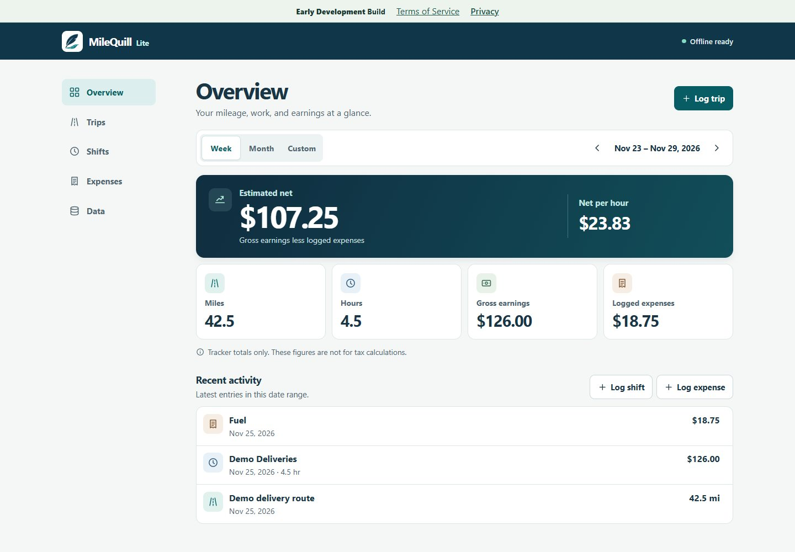
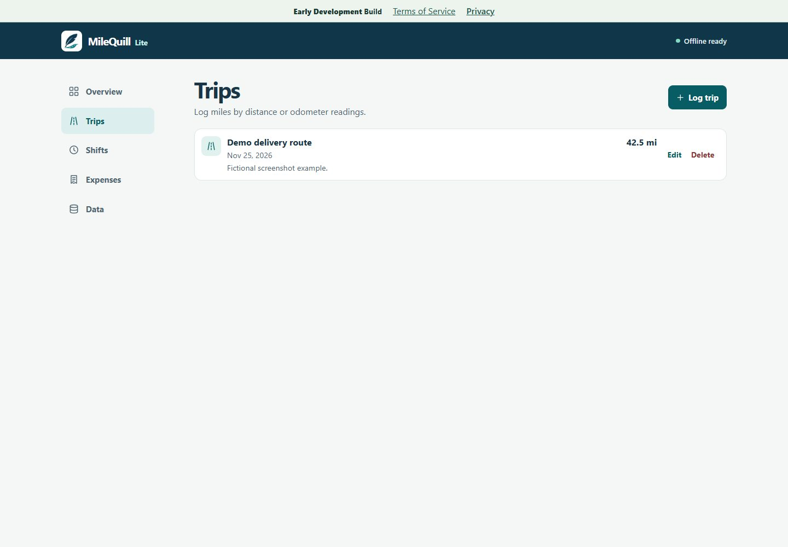
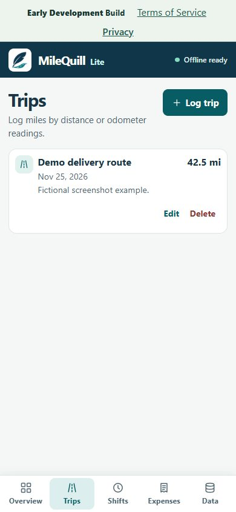

Mileage & shifts
MileQuill Lite
MileQuill Lite is a free, offline-capable web app for gig workers. Record the miles you drove, the hours you worked, what each shift paid, and what it cost. Bring those records together to see what you kept per hour.

Feature screenshots
Captured from the working app in a local preview with fictional entries only. Phone images are labeled “iPhone viewport preview.” Select an image to view it at full size.






Data guide
Data & backups
- Where records live
- Trips, shifts, and expenses stay in this browser’s on-device database (IndexedDB). The app stores them without vault encryption or cloud sync. Safari and a Home Screen installation can have separate records.
- Make a backup
- In Data, download a full JSON backup from the browser or installation where you logged your work. The file contains readable records, so keep it somewhere private before clearing site data or changing devices.
- Restore your records
- Choose the JSON backup in Data. MileQuill checks the file and shows the number of trips, shifts, and expenses. Confirming the restore replaces all three local lists.
Keep a shift log
- Trip mileage
- Enter the distance directly or enter starting and ending odometer readings and let the app calculate the miles. Give each trip a date and a platform or business purpose.
- Hours and earnings
- Record the platform, shift date, and gross pay. Enter the hours worked or supply start and end times, including a shift that runs past midnight.
- Work expenses
- Give each expense a date, amount, and category. Use the optional notes on any trip, shift, or expense to keep details you might otherwise forget.
- Record history
- Open Trips, Shifts, or Expenses to review the full list by date. Edit an entry to correct it, or confirm its deletion to remove it.
Review what you earned
- Reporting periods
- Step through weeks or calendar months, or choose your own start and end dates. The overview and recent activity both follow that selection.
- Mileage and earnings totals
- Compare miles, hours, gross pay, and recorded expenses. Estimated net subtracts the expenses you logged from gross earnings. When hours are available, net per hour divides that result by your time. These are work summaries, not tax calculations.
- Recent activity
- The overview shows the five latest entries in the selected period. Add a trip, shift, or expense directly from this screen.
Take your records with you
- Spreadsheet exports
- Download a separate CSV for trips, shifts, or expenses. Each file includes every saved entry of its type, including entries outside the displayed reporting period.
- Working offline
- After the app finishes its first online setup, you can reopen it and keep logging without a connection. The status indicator shows offline readiness and an update control appears when a new version is ready.